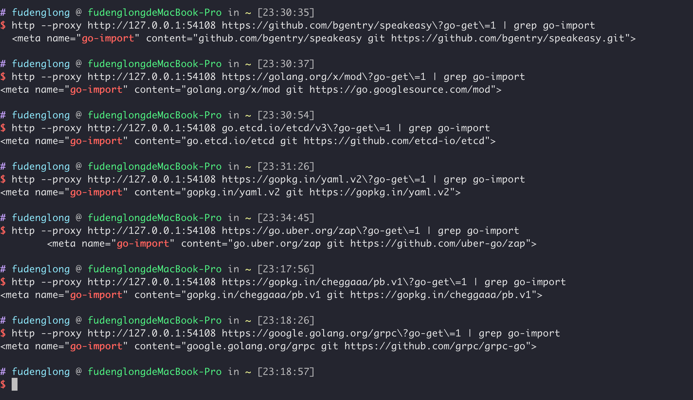

【Golang】Go Modules
每个语言都有自己的依赖管理系统，就像 Cargo，npm，Composer， Nuget， Pip， Maven 等，Go 语言也不能例外，在 go mod 出来之前，有两种模式：
-
GOPATH模式，这种模式把问题想象的太过于简单理想化，可以说是Go语言设计的败笔，因为不支持对依赖的版本管理，不同的项目依赖同一个第三方库的不同版本，GOPATH就无法搞定，只能切来切去。 -
vendor模式，这种模式将第三方依赖下载到项目的vendor目录下，实现了不同项目之间相互隔离，但是也不支持对依赖的版本管理，没有统一的地方进行声明，一更新就会升级到最新版本，不像很多语言中，将项目的依赖固化到一个*_lock.json版本中，这样在项目转移到其他地方进行编译，能确保得到一致的功能。当然，也有很多人喜欢将vendor目录上传到仓库，保持不同地方编译后二进制一致性，不过这样会导致仓库体积过大，有利有弊。
在这种背景下，诞生了很多第三方的依赖管理工具，如：govendor，glide，dep等，为了解决这种乱象，Go官方出品了 Go Modules，一统江山，其他第三方管理工具就都成为了历时。

go.mod
go.mod 文件描述了Go模块的一些属性，模块是包的集合，模块中的每个包都是同一目录中编译在一起的源文件的集合，包路径（package path），就是将模块路径（module path），和包含包的子目录连接起来，例如 golang.org/x/net 模块在 html 目录中包含一个包，那么这个包的路径就是 golang.org/x/net/html。go.mod 要包括第三方依赖信息和Go版本，下面是 etcd 的 go.mod 文件。
1 | module go.etcd.io/etcd/v3 |
该文件被设计成人类可读的文本文件，由注释，关键字，空行以及允许的 , 和 => 组成。初始化一个 module 可以使用 go mod init 命令，还有很多用于模块的命令，更多请看：Module-aware commands。
module
module 关键字声明[模块路径]((https://golang.google.cn/ref/mod#module-path)，包含两层意思，当前模块是什么和去哪里找。通常情况下，模块路径由仓库根路径、仓库中的目录和可选的版本后缀（用于v2版本或者更高版本）组成。
go 的下载命令会根据模块路径构造查询请求，找到模块的源码下载路径和协议。如 github.com/bgentry/speakeasy 模块，Go 在查找此模块时，会先构造查询请求：https://github.com/bgentry/speakeasy?go-get=1，这个请求的返回内容中，通常包含一个特殊的 HTML META 标签，格式为：<meta name="go-import" content="root-path vcs repo-url">，包含三部分信息：
root-path存储仓库的根路径，和模块路径相对应，该目录下包含了go.mod文件，它必须是所请求模块路径的前缀或完全匹配。vcs版本控制系统，例如：git、svn、hgrepo-url仓库的URL

如何从一个 package path 解析找到module，点击查看详情。
注释
以 // 开头的行被当做注释，/**/ 这种注释是不允许的。当开发一个新的版本，想要将老版本标记为弃用时，通常在 module 关键在上方，以一行包含 Deprecated 的注释标记，如：
1 | // Deprecated: use example.com/mod/v2 instead. |
go
go 表示该模块在指定的Go版本下编写验证通过，必须是一个有效的版本号。这个指令的引入了是为了防止发生语言上向后不兼容的更改，自引入模块以来，没有发生不兼容的语言更改，但 go 指令仍然影响新语言功能的使用：
- 对于模块内的包，编译器拒绝使用在指定版本后的语言功能。例如，如果一个模块有
go 1.12指令，它的包可能不会使用像1_000_000这样的数字文字，这是在Go 1.13中引入的。 - 如果使用较旧的Go版本编译遇到错误，编译器会指出这个模块使用了较新版本的语言功能。例如，假设一个模块的版本为
1.13，一个包使用数字文字1_000_000。如过用Go 1.12构建，编译器做出提示。
另外，go 命令 会根据 go 指令 指定的版本更改行为，如：
-
在
go1.14或者更高版本，如果模块内存在vendor/modules.txt文件，并且与go.mod一致，会自动启用vendor模式，无需显示使用-mod=vendor标记； -
在
go1.16或者更高版本，all包模式仅仅匹配主模块中的包和tests导入的包，不像在低版本，还包括主模块导入的包中的测试包； -
在
go1.17或者更高版本时：go.mod文件为每个模块包含一个显式的require指令，该指令提供由主模块中的包或测试传递导入的任何包；- 因为可能比之前的 ·go· 版本有更多的
// indirect间接依赖，间接依赖被记录在go.mod文件中的一个单独的块中； go mod vendor或会略vendor目录中其他依赖的go.mod和go.sum，这样go命令在vendor子目录中使用时，就能正确识别主模块；go mod vendor会在vendor/modules.txt文件中记录vendor中每个依赖的go版本；
示例：
go 1.14
require
require 声明模块依赖的最小版本号。对每个指定的依赖，go命令 会加载该依赖版本的 go.mod 文件，并合并该文件指定的依赖，以此类推，当加载所有依赖之后，go命令 会使用 MVS 算法生成构建列表。
对于间接依赖，go 命令会自动添加 // indirect 注释。
示例：
1 | require golang.org/x/net v1.2.3 |
exclude
exclude 阻止 go 命令加载某个版本的依赖。go 命令仅使用主模块中的 exclude 声明。
从 Go 1.16 开始，任何 go.mod 文件中使用 require 指令指定的依赖版本被主模块的中 exclude 指令排除，这些 require 将失去作用。这可能导致 go get 和 go mod tidy 自动添加一个更新版本的依赖信息到 go.mod。
示例：
1 | exclude golang.org/x/net v1.2.3 |
reaplce
replace 将从任何 go.mod 中找到的指定版本依赖替换为另一个版本。
如果 => 左侧的版本号没有省略，那么只会替换特定版本依赖，其他都是正常的，如果左侧的版本号被省略了，那么指定的依赖所有版本将被替换。
如果右侧的是一个以 ./ 或者 ../ 开头的本地路径，那么这个路径下必须包含一个 go.mod 文件，并且版本号必须要省略。如果不是本地路径，那么它必须是一个有效的模块路径，这种情况下，版本号是必须的，
示例：
1 | replace golang.org/x/net v1.2.3 => example.com/fork/net v1.4.5 |
retract
retract 指令表示不应该依赖本模块的某个或者某些版本。当发现版本发布过早或者版本发布后出现严重问题，这个指令是非常有用的。撤回的版本不应该被删除掉，确保他们在代码仓中可用，以确保依赖于他们的构建不会被破坏，撤回并不是不可用，而是不应该用，它依然有用。
想要撤回一个版本，应该发布一个新版本并且在新版本的 go.mod 文件中使用 retract 指令声明撤回的版本。
go list -m -versions 中列出的版本会屏蔽撤回的版本，除非加上 -retracted。版本查询 如 @>=v1.2.3 或者 @latest 也会忽略撤回的版本。
可以在一个版本中撤回自己，如果模块的最高发行版或预发行版撤回自己，则在排除收回的版本后，@latest 查询将解析为较低版本。举个例子，有个模块 example.com/m 的 v1.0.0 存在问题，然后作者发新的 v1.0.1 版本，但是他在 go.mod 中将 v1.0.1 也撤回：
1 | retract ( |
当运行命令 go get example.com/m@latest 时，会从 v1.0.1 解析到 retract 信息，又由于 v1.0.1 和 v1.0.0 都被撤回，go 命令可能选择较老的版本：v0.9.x。
每个撤回指令都应该有一个注释来解释撤回的理由，尽管这不是强制性的。 go 命令可能会在有关撤回版本的警告和 go list 输出中显示撤回原因。注释可以写在撤回指令的正上方（中间没有空行），也可以写在同一行之后。如果注释出现在块上方，则它适用于块内没有自己注释的所有收回指令，原理注释可能跨越多行。
示例：
1 | retract v1.0.0 |
这个指令是 Go1.16 才加的，低版本使用会报告错误。
版本号
版本可以视为模块的一个快照，它可以是发布版本或预发布版。每个版本都以字母 v 开头，后跟一个语义版本。
总的来说，语义版本由三个由 . 分隔的非负整数（分别表示主版本、次版本和补丁版本，从左到右）组成。补丁版本后面可以跟一个以 - 开头的可选预发布字符串。预发布字符串或补丁版本后面可以跟一个以+号开头的构建元数据信息。例如，v0.0.0、v1.12.134、v8.0.5-pre、v2.0.9+meta 都是有效版本。
版本的每一部分都表示版本是否稳定以及是否与以前的版本兼容。
- 在对模块的公共接口或记录的功能进行向后不兼容的更改后，例如，在删除包之后，必须增加 major version，并且次版本和补丁版本必须设置为
0。 - 对于向后兼容更改，例如，在添加新功能之后，minor version必须递增并且补丁版本设置为
0。 patch version必须在不影响模块公共接口的更改后递增，例如错误修复或优化。- 预发布后缀表示版本是pre release。预发布版本排在相应的发布版本之前。例如，
v1.2.3-pre出现在v1.2.3之前。 - 出于比较版本的目的，将忽略构建元数据后缀，版本控制存储库中会忽略带有构建元数据的标签。
如果一个版本的主版本号是 0 或者它有一个预发布后缀，那么它被认为是不稳定的。不稳定的版本不受兼容性要求的限制。例如，v0.2.0 可能与 v0.1.0 不兼容，v1.5.0-beta 可能与 v1.5.0 不兼容。
伪版本号
伪版本是一种特殊格式的预发布版本，它在版本控制存储库中对有关特定修订的信息进行编码，例如 v0.0.0-20191109021931-daa7c04131f5 就是一个伪版本，伪版本经常用来应用于没有打标签的仓库。伪版本有三个部分：
- 一个基本前缀如：
vX.0.0或者vX.Y.Z-0； - 一个时间戳：
yyyymmddhhmmss，一般指Git仓库中的提交时间； - 一个修订表示符，一般是commit 哈希值的前12个字符；
每个伪版本可能是三种形式之一，具体取决于基本版本。这些形式确保伪版本比其基本版本高，但比下一个标记版本低。
- 当没有已知的基本版本时，使用
vX.0.0-yyyymmddhhmmss-abcdefabcdef。与所有版本一样，主要版本 X 必须与模块的主要版本后缀匹配 vX.Y.Z-pre.0.yyyymmddhhmmss-abcdefabcdef用于基础版本是像vX.Y.Z-pre这样的预发布版本。vX.Y.(Z+1)-0.yyyymmddhhmmss-abcdefabcdef当基础版本是像vX.Y.Z这样的发行版本时使用。
主版本后缀
从主版本 v2 开始，模块路径必须具有与主要版本匹配的主要版本后缀，例如 /v2。例如，如果模块在 v1.0.0 中具有路径 example.com/mod，则在 v2.0.0 版本中它必须具有路径 example.com/mod/v2。
主要版本后缀实现了导入兼容性规则：
如果旧包和新包具有相同的导入路径，则新包必须向后兼容旧包。
根据定义，模块的新主版本中的包与先前主要版本中的相应包不向后兼容。因此，从 v2 开始，包需要新的导入路径。这是通过向模块路径添加主版本后缀来实现的。由于模块路径是模块内每个包的导入路径的前缀，因此将主版本后缀添加到模块路径可为每个不兼容的版本提供不同的导入路径。
主版本 v0 或 v1 不允许使用主要版本后缀。 v0 和 v1 之间的模块路径不需要更改，因为 v0 版本不稳定，没有兼容性保证。此外，对于大多数模块，v1 向后兼容最新的 v0 版本； v1 版本作为对兼容性的承诺，而不是与 v0 相比不兼容更改的指示。
作为一种特殊情况，以 gopkg.in/ 开头的模块路径必须始终具有主版本后缀，即使是 v0 和 v1。后缀必须以.而不是/开头（例如，gopkg.in/yaml.v2）。
+incompatible
为了确保从 GOPATH 到 Go Module 的平滑过渡，go命令也可以支持下载和构建非Module仓库。
当 go 命令直接从存储库下载给定版本的模块时，如果模块路径等于存储库根路径，并且存储库根目录不包含 go.mod 文件，则 go 命令会在模块缓存中合成一个 go.mod 文件，该文件包含一个模块指令，仅此而已。由于合成 go.mod 文件不包含它们的依赖项的 require 指令，依赖它们的其他模块可能需要额外的 require 指令（带有 // indirect 注释）以确保每个依赖项在每次构建时都以相同的版本获取。
以主版本 v2 或更高版本发布的模块必须在其模块路径上具有匹配的主版本后缀。例如，如果一个模块是在 v2.0.0 发布的，它的路径必须有一个 /v2 后缀。这允许 go 命令将项目的多个主要版本视为不同的模块，即使它们是在同一个存储库中开发的，如：
module go.etcd.io/etcd/v3
如果在这个要求引入之前，肯定已经有很多仓库发布了 v2 或者更高版本，为了保持与这些存储库的兼容性，go 命令在没有 go.mod 文件的主版本 v2 或更高版本中添加了 +incompatible 后缀。 +incompatible 表示某个版本与具有较低主要版本号的版本属于同一模块；因此， go 命令可能会自动升级到更高的 +incompatible 版本，如：
require example.com/m v4.1.2+incompatible
环境变量
go命令中的模块行为可以由下面列出的环境变量进行配置，所有的环境请查看：https://pkg.go.dev/cmd/go#hdr-Environment_variables
-
GO111MODULE，控制 go命令以模块方式运行还是GOPATH模式，有三个可选的值：off：go命令忽略go.mod文件并且以GOPATH模式运行；on，或者不设置，go命令将以模块的方式运行，即使没有找到go.mod文件；auto，Go1.15 之前的默认值，如过在当当前目录或者父目录中找到go.mod文件，将以模块方式运行；
-
GOMODCACHE，go命令用于存储下载的模块和相关文件，默认是：$GOPATH/pkg/mod，更多请读Module cache ； -
GOINSECURE，逗号分隔的以模块路径为前缀的模式匹配列表； -
GONOPROXY，逗号分隔的以模块路径为前缀的模式匹配列表，匹配的模块将直接从仓库下载； -
GONOSUMDB，逗号分隔的以模块路径为前缀的模式匹配列表，匹配的模块不会去做校验； -
GOPATH，包含Go代码的列表；模块模式下，模块缓存被放在第一个GOPATH目录的pkg/mod子目录，如果没有设置，默认是$HOME/go； -
GOPROXY，模块代理 URL 列表，以,或|分隔。当 go 命令查找某个模块的信息时，它会依次访问列表中的每个代理，直到收到成功响应或终端错误为止。代理可能会以404（未找到）或410（已消失）状态响应，以指示该模块在该服务器上不可用。go 命令的错误回退行为由 URL 之间的分隔符决定。如果代理 URL 后跟
,，则 go 命令在404或410错误后回退到下一个 URL，所有其他错误都被视为终端错误。如果代理 URL 后跟一个|，则 go 命令在出现任何错误（包括超时等非 HTTP 错误）后会回退到下一个源。GOPROXY URL可能具有https、http或file协议。默认为https，模块缓存可以直接用作文件代理：GOPROXY=file://$(go env GOMODCACHE)/cache/download
有两个关键字可以用在 proxy url 列表中：
off：禁止从任何源下载模块；direct：直接从代码仓下载模块，而不是代理；
GOPROXY默认值是https://proxy.golang.org,direct，可以查看 nodule proxy 获取更多信息。 -
GOSUMDB，标识要使用的校验数据库的名称以及可选的其公钥和 URL。例如：1
2
3GOSUMDB="sum.golang.org"
GOSUMDB="sum.golang.org+<publickey>"
GOSUMDB="sum.golang.org+<publickey> https://sum.golang.org"go命令知道连接到
sum.golang.org和sum.golang.google.cn的公钥。如果
GOSUMDB设置为off或者使用go get -insecure，则不会查询校验数据库，并接受所有无法识别的模块，代价是放弃对所有模块进行已验证的可重复下载的安全保证。绕过特定模块的校验和数据库的更好方法是使用GOPRIVATE或GONOSUMDB环境变量。 -
GOVCS，控制go命令可以用来下载公共和私有模块或其他与模式匹配的模块的版本控制工具集。如果未设置GOVCS，或者模块与GOVCS中的任何模式都不匹配，则go命令可能对公共模块使用git和hg，或对私有模块使用任何已知的版本控制工具。具体来说，go命令就像GOVCS被设置为：public:git|hg,private:all